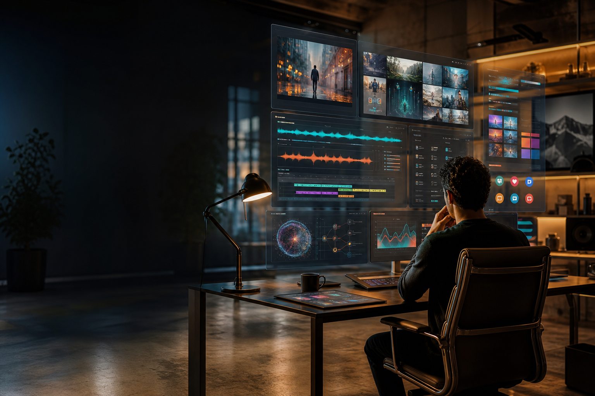

Modelos que importan
Seguimiento de modelos de imagen, video, voz, musica, texto y agentes, con foco en calidad real y uso profesional.

AI content intelligence
La referencia mundial para crear, dirigir y publicar contenidos con inteligencia artificial.
Una guia viva
Pixeria ordena el nuevo territorio de la creacion: modelos, prompts, pipelines, derechos, costes, calidad, distribucion y criterio editorial.
El objetivo es que un equipo pueda pasar de una idea a una pieza publicable sin perderse entre novedades, demos y ruido.
Radar
Seguimiento de modelos de imagen, video, voz, musica, texto y agentes, con foco en calidad real y uso profesional.
Del briefing a la publicacion: ideacion, guion, arte, produccion, revision, versionado y entrega.
Comparativas practicas para decidir cuando prototipar, cuando automatizar y cuando producir con control humano.
Guias para mantener tono, verdad, autoria y consistencia de marca en equipos aumentados por IA.
Formatos
Storyboards, generacion, edicion, doblaje, subtitulos, loops y piezas verticales.
Direccion de arte, producto, fotografia sintetica, retoque, estilos y consistencia visual.
Voces, musica, paisajes sonoros, jingles, locuciones y sistemas de marca sonora.
Guiones, newsletters, social, SEO, manuales, pitches, prompts y conocimiento interno.
Campanas, variantes, test creativo, personalizacion y activos para cada canal.
Automatizacion, agentes, governance, repositorios, aprobaciones y trazabilidad.
Programas
Ranking editorial de modelos, herramientas y flujos por utilidad real: calidad, coste, control, velocidad, derechos y facilidad de integracion.
Plantillas paso a paso para campanas, contenidos sociales, branded content, formacion y documentacion.
Pruebas lado a lado con prompts, resultados, costes y decisiones explicadas sin humo.
Guia para crear voces, estilos visuales, prompts base y controles de calidad reutilizables.
Metodo Pixeria
Entender audiencia, objetivo, restricciones, sensibilidad legal, presupuesto y canales.
Convertir el brief en un pipeline reproducible: modelos, prompts, assets, roles y puntos de control.
Crear versiones con criterio, revisar calidad, medir coste y documentar decisiones.
Preparar entregables, adaptar canales, guardar aprendizajes y alimentar el siguiente ciclo.
Biblioteca
Pixeria nacera como una biblioteca editorial y tecnica: guias, comparativas, plantillas, prompts, revisiones de herramientas, casos reales y playbooks por sector.
Proponer tema